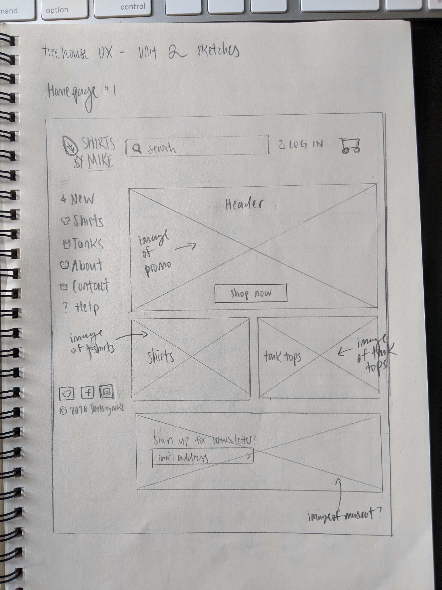
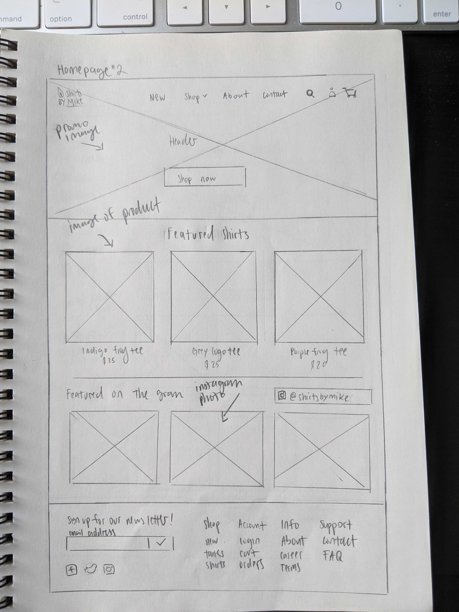
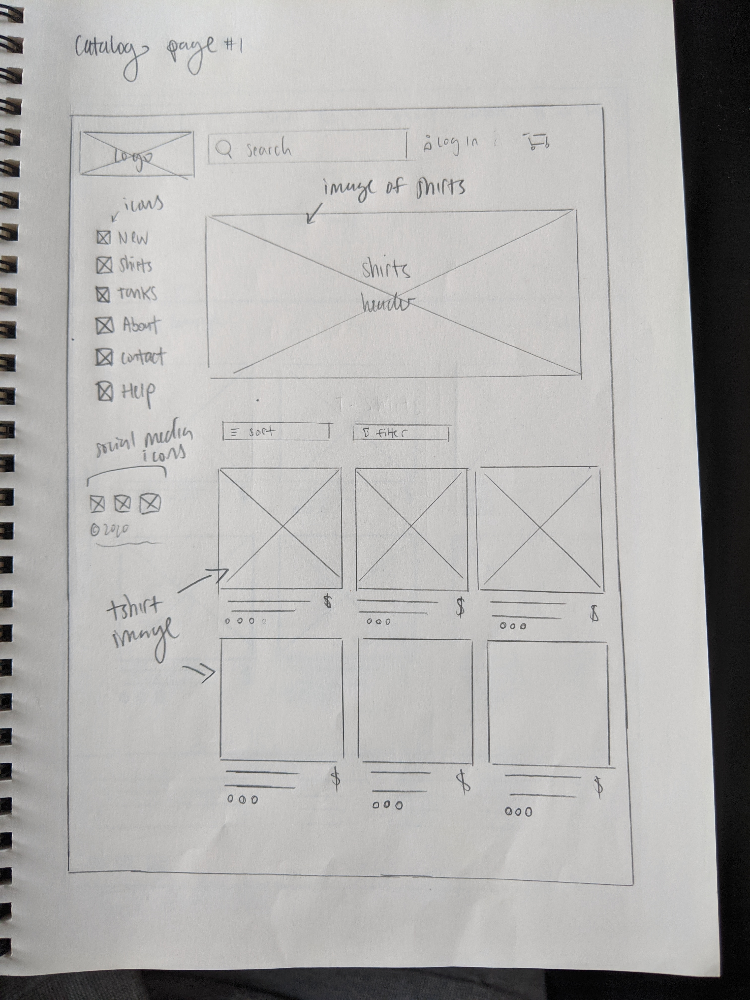
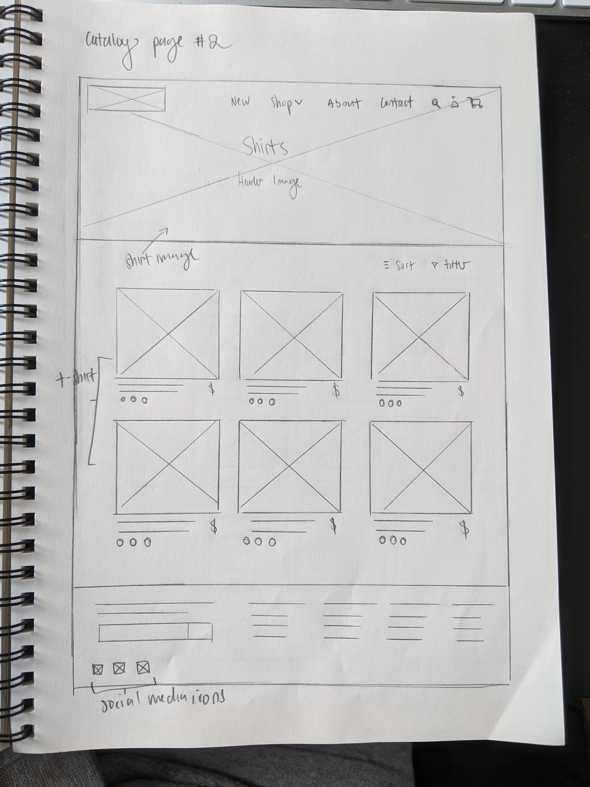
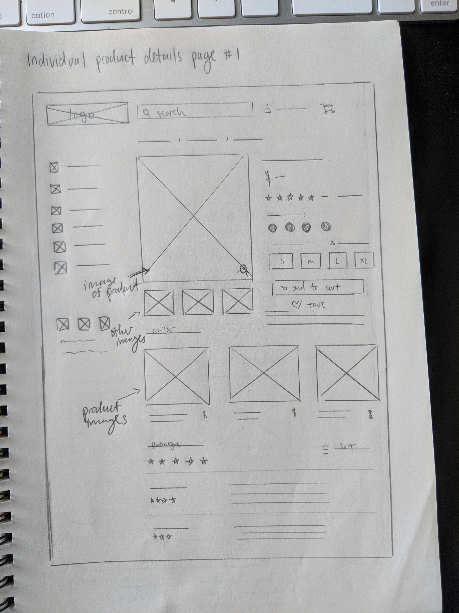
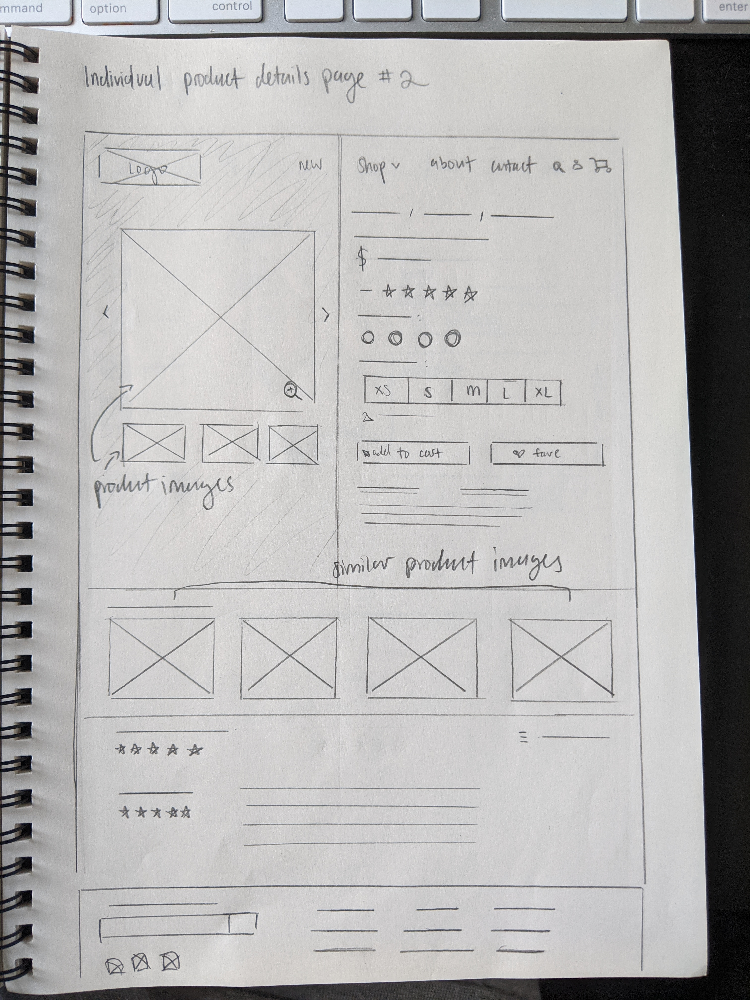
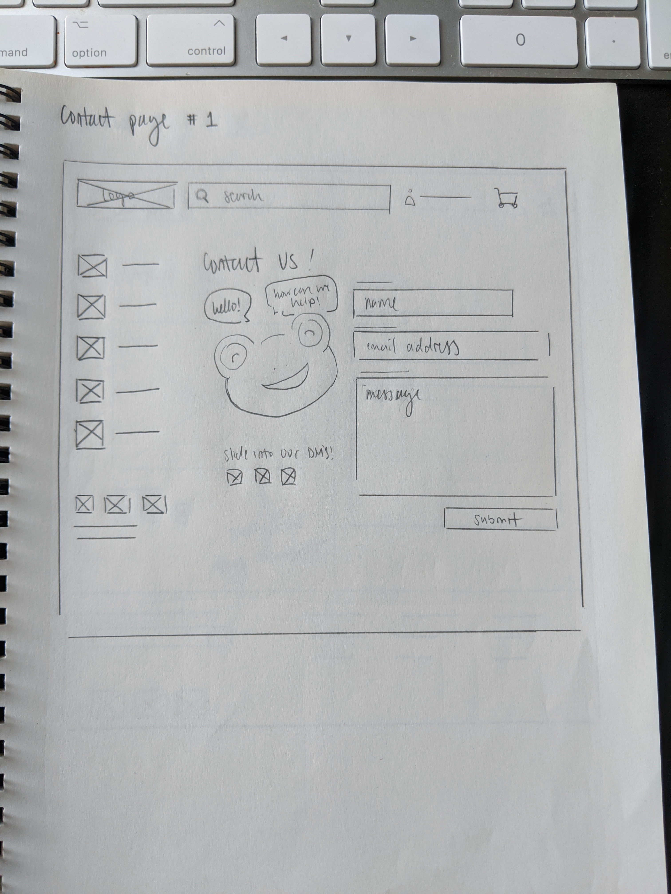
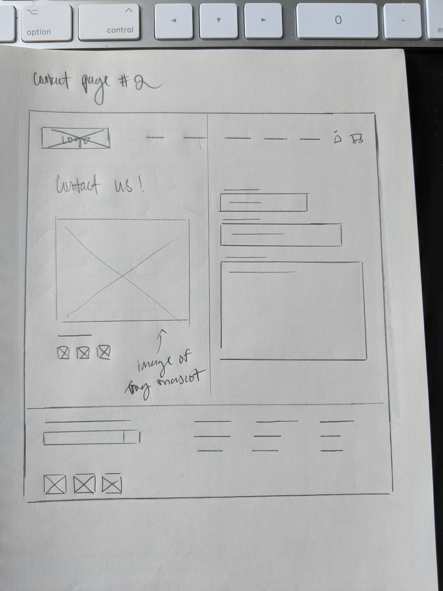
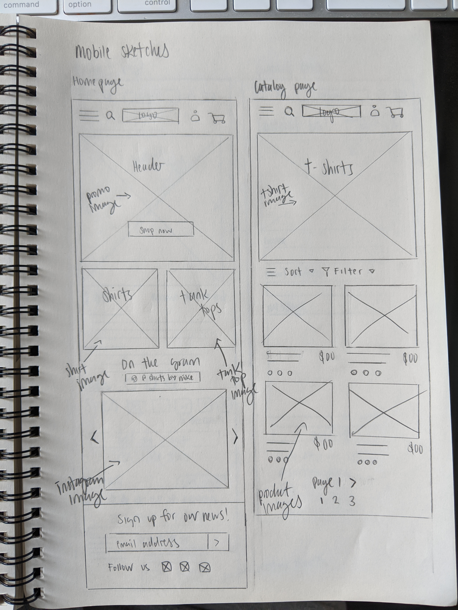
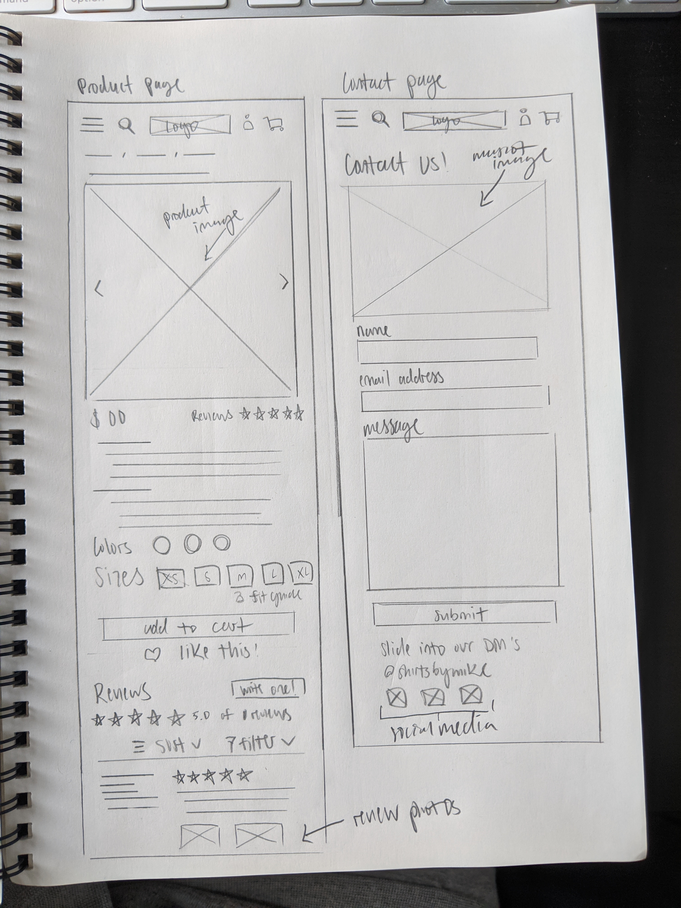

This is the first project of a series of three, created for the Treehouse UX program. ShirtsByMike is a mock online T-shirt store that needed an overhaul and redesign in hopes that it would increase their sales and build a stronger customer base. In this project, I redesigned their existing website to make it more engaging to its users by refreshing the brand and featuring T-shirts on the homepage. Additionally, I optimized the website for both desktop and mobile devices.
Role: Research, strategy, design
Team: Solo project
Length: February to April 2020
Tools: Sketch, Illustrator, Photoshop
The owner of ShirtsByMike envisioned a website that would connect more with their intended audience, which is comprised primarily of Treehouse students. Currently, the website looks dated and could use a refresh in their branding, as well as featured campaigns to keep users engaged.
I researched other websites in the T-shirt space and enumerated the similarities, differences, and selling points from each site. I assessed the strengths of each website, and incorporated them into my proposed designs.
I also looked at other websites for further inspiration from modern clothing sites, Everlane and Madewell. Though their target audiences are not exactly the same, there were some similarities such as the target age range of shoppers and design philosophies.
I came up with a profile of a typical user that would fall under the target audience. I wanted to understand their thought processes, what they would look for in a T-shirt website, and how they would use it.
I explored two different ideas for each page, with each having different elements but accomplishing the same issue.
Much of my inspiration came from Pinterest, Dribbble, the three competitors (Teepublic, Design By Humans, and Threadless), and modern fashion websites (H&M, Everlane, Madewell).
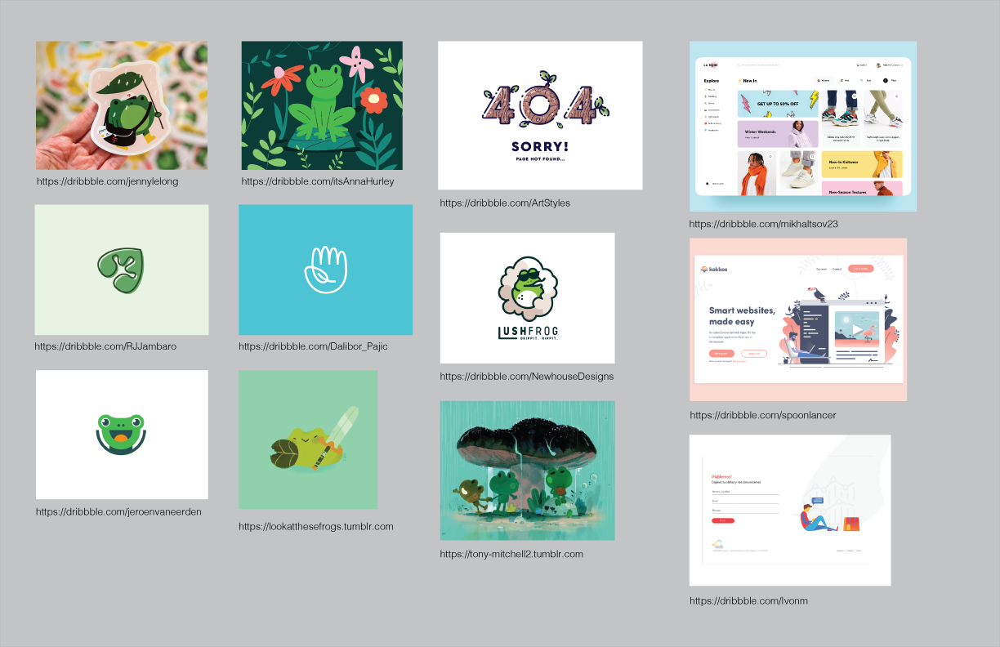After sketching out the wireframes, I took the best of both worlds of both ideas and then added some new ideas.
Some aspects of the original desktop site had to be simplified or hidden entirely in order to create the site mobile-friendly.
I hid some less-important elements to make more screen space to feature more important ones. I had a left facing navigation bar — so I decided to create a hamburger menu for users to press or swipe out to view. With the search bar, I placed it into a search icon that would drop down after being pressed.
I also simplified both the Instagram and product pages by creating an image carousel for the photos in order to save screen space. In the catalog page, I downsized the elements into a double column grid for a better view experience. As a result, I added a “swipe down for more” at the bottom so users can easily go to the next page below to load and see more products.
Similarly with the desktop wireframe pages, I adjusted the footer to match the content more closely. However, I simplified the sections to reduce clutter, and tried to avoid overcrowding the mobile page or making the links too small to click on.
In order to make the website more appealing and refreshing, I came up with a new palette of various complementary colors. I kept an orange color as a nod to the original design, so that the website redesign is not as jarring to prior visitors of the page. I wanted a palette that gives off a vibrant and fun vibe, on top of exuding a casual and warm personality.
The entirety of the text on the site is Brandon Grotesque, a sans serif font, which I chose for its warm and functional look.
I also felt that the logo needed an update to better match with the new style of the website — this would also give me another graphic I can add to a shirt. I wanted to keep some elements of the old logo (like the leaf) as a homage to the original, but featuring Mike the Frog more prominently so that users can easily associate him with the brand.
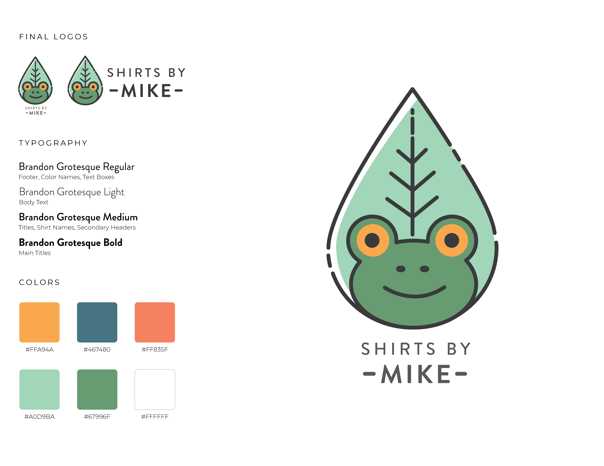In designing the website for mobile visitors, I wanted to preserve the same theme and experience as the desktop version. The intent was to provide a sense of familiarity and brand stickiness such that the mobile site feels united with the desktop.
Though most of the same components and text were ported over almost exactly, I resized a lot of them to fit within the much more narrow screen dimensions. Text was also enlarged in certain places for easier reading, and components are stacked more vertically instead of horizontally to accommodate users scrolling up and down on their phone. Like the desktop site, I wanted to maintain a consistent header and footer on each page of the website — with the main difference being that we don’t have as much screen space to work with on mobile. I condensed the header by using large icons to symbolize buttons that the user can press (e.g. search bar to search the site), that way there is more screen space to view the main content of the page.
From this project, I learned about what goes into a good website design. It’s not just about the layout, typography, and visuals — what’s really important is the brand and how it is received by the target audience. It’s also not enough for a website to be visually stunning, it must also take into account who the user is and how they would interact with the site. As a result, the tone of voice and content of the website also matter a lot, and connecting that with the design of the site is essential.
I also learned a lot from checking out other apparel websites as references, how they incorporate their brand into the site design, and how they utilize color and typography. This gave me a lot of good ideas and inspiration for my own site design.
I would add more content to the website that provides more active community engagement. For example, I would include Instagram and Twitter contests that promote the brand and encourage the users to share the website more broadly. In general, having more lively color and illustrations could help tie the pages together and showcase the dynamicness and liveliness of the site.
Additionally, I would include more information about the company itself — there is currently minimal information about the brand, and what “sustainability” really means for the company and how they would achieve it. It would also be insightful to add some narrative about the brand and its origin so that visitors can learn about the site they’re shopping from, which would give them more confidence and trust in ShirtsByMike.